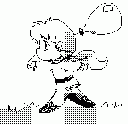

Сказка для демонов младшего дошкольного возраста.
(Скомпилировано со сказки Алана Александра Милна “Винни-Пух и все-все-все”).
Посвящается Стражу и Амбер, из вечерних бесед с которыми и родилась эта компиляция.
Глава первая,
в которой мы знакомимся с Неффи-чаном и несколькими сейлорами.
Давным-давно - кажется, в первый сезон – жил-был в Темном Королевстве Неффи-чан. Вот однажды, гуляя по Токио, он вышел на площадь. На площади стояла высокая-превысокая телебашня, а на самой верхушке этой телебашни кто-то громко кричал: “Moon Prism Power, Make Up!”…
Неффи-чан сел на скамейку под телебашней, обхватил голову руками и стал думать.
Сначала он подумал так: “Это – Make Up – неспроста! Зря никто так кричать не станет. Сама башня кричать тоже не может. Значит, тут кто-то кричит. А зачем тебе кричать “Make Up”, если ты – не сейлор? По-моему так!”
Потом он еще подумал-подумал и сказал про себя: “А зачем на свете сейлоры? Для того чтобы делать гиндзуйсё! По-моему, так!”
Тут он поднялся и сказал:
- А зачем на свете гиндзуйсё? Для того чтобы я его забрал! По-моему, так, а не иначе!
Но поскольку он был достаточно умным демоном (хотя про него часто говорили, что у него в голове опилки), он решил заручиться поддержкой своего друга Зойчика. Итак, Неффи-чан отправился к своему другу.
Зойчик сидел на крыльце своего дворца и гадал на ромашке, выясняя – любит, не любит, плюнет или поцелует. Оказалось, что плюнет, и он теперь старался вспомнить, на кого он загадал, надеясь, что это не Неффи. И тут появился Неффи-чан.
- Доброе утро, Зойчик! – сказал Неффи-чан.
- Доброе утро, Неффи-чан! – несколько нервно ответил Зойчик.
- Интересно, нет ли у тебя случайно воздушного шарика?
- Воздушного шарика?
- Да, я как раз шел и думал: “Нет ли у Зойчика случайно воздушного шарика?” Мне было просто интересно.
- А зачем тебе понадобился воздушный шарик?
Неффи-чан оглянулся и, убедившись, что никто не подслушивает, прижал руку к губам и сказал страшным шепотом:
- Гиндзуйсё.
- Что-о?
- Гиндзуйсё! – повторил Неффи-чан.
- Кто же ходит за гиндзуйсём с воздушным шариком?
- Я хожу! – сказал Неффи.
Ну, а как раз накануне в королевском дворце была большая дискотека, и там всем гостям дарили воздушные шарики. Зойчику достался большущий зеленый шар, а одному его очень близкому другу приготовили большой-пребольшой синий шар, но этот друг его не взял, потому что очень не любил дискотек и остался дома, поэтому Зойчику пришлось захватить с собой оба шара – и зеленый и синий.
- Какой тебе больше нравится? – спросил Зойчик.
Неффи обхватил голову руками и задумался глубоко-глубоко.
- Вот какая история, - сказал он, - если хочешь достать гиндзуйсё – главное дело в том, чтобы сейлоры тебя не заметили. И вот, значит, если шар будет зеленый, они могут подумать, что это листок, и не заметят тебя, а если шар будет синий, они могут подумать, что это просто кусочек неба, и тоже тебя не заметят. Весь вопрос – чему они скорее поверят?
- А думаешь, они не заметят под шариком тебя?
- Может, заметят, а может, и нет, - сказал Неффи-чан, - разве знаешь, что сейлорам в голову придет? – он подумал минутку и добавил: - Я притворюсь, как будто я маленький черный мымрик. Тогда они не догадаются!
- Тогда тебе лучше взять синий шарик, - сказал Зойчик.
И вопрос был решен. Друзья взяли с собой синий шарик, и оба отправились в поход. Неффи-чан первым делом подошел к одной знакомой луже (он часто там валялся) и как следует вывалялся в грязи, чтобы стать совсем-совсем черным, как настоящий мымрик. Потом они стали надувать шар, держа его вдвоем за веревочку. И когда шар раздулся так, что казалось, вот-вот лопнет, Зойчик вдруг отпустил веревочку, и Неффи-чан плавно взлетел в небо и остановился там – как раз напротив верхушки телебашни, только немного в стороне.
- Урааа! – закричал Зойчик.
- Что, здорово? – крикнул ему из поднебесья Неффи-чан.- Ну, на кого я похож?
- На генерала, который летит на воздушном шаре!
- А на маленького черного мымрика разве не похож? – тревожно спросил Неффи.
- Не очень.
- Ну ладно, может быть, отсюда больше похоже. А потом, разве знаешь, что придет сейлорам в голову!
К сожалению, ветра не было, и Неффи повис в воздухе совершенно неподвижно. Он мог чуять гиндзуйсё, он мог видеть гиндзуйсё, но достать гиндзуйсё он, увы, никак не мог.
Спустя некоторое время он снова заговорил.
- Зойчик! – крикнул он шепотом.
- Чего?
- По-моему, сейлоры что-то подозревают!
- Что именно?
- Не знаю я. Но только, по-моему, они ведут себя подозрительно!
- Может, они думают, что ты хочешь утащить у них гиндзуйсё?
- Может, и так. Разве знаешь, что сейлорам в голову придет!
Вновь наступило недолгое молчание. И опять послышался голос Неффи:
- Зойчик!
- Что?
- У тебя во дворце есть зонтик из защитного поля?
- Кажется, есть.
- Тогда я тебя прошу: принеси его сюда и ходи тут с ним взад и вперед, а сам поглядывай все время на меня и приговаривай: “Тц-тц-тц, кажется, это мымрик! ” Я думаю, тогда сейлоры нам лучше поверят.
И Зойчик отправился домой за зонтиком.
- Наконец-то! – крикнул Неффи-чан, как только Зойчик вернулся, - А я уже начал беспокоиться. Я заметил, что сейлоры ведут себя совсем подозрительно!
- Открыть поле или не надо?
- Открыть, но только погоди минутку. Надо действовать наверняка. Самое главное – это обмануть сейлоровскую принцессу. Тебе ее оттуда видно?
- Нет.
- Жаль, жаль. Ну, тогда ты ходи с зонтиком и говори: “Тц-тц-тц, кажется, это мымрик”, а я буду петь специальную мымрикову песню – такую, какую, наверное, поют все мымрики на небесах.… Давай!
Зойчик принялся расхаживать взад и вперед под телебашней и говорить, что, кажется, это мымрик, а Неффи-чан запел такую песню:
Я мымрик, мымрик, мымрик,
А вовсе не медведь,
Ах, как приятно мымрику
По небу лететь!
Ах, в синем-синем небе
Порядок и уют –
Поэтому все мымрики
Так весело поют!
Но сейлоры, как ни странно, голосили все подозрительнее и подозрительнее. Некоторые из них даже слетели с телебашни и стали летать вокруг Неффи, когда он запел второй куплет песни. А одна сейлорша вдруг подлетела вплотную к Неффи и сразу же снова улетела.
- Зой – ай – чик! – закричал Неффи.
- Что?
- Я думал, думал и наконец все понял. Это неправильные сейлоры!
- Да ну?
- Совершенно неправильные! И у них, наверное, неправильное гиндзуйсё, правда?
- Ну да?
- Да. Так что мне, скорей всего, лучше спуститься вниз.
- А как? – спросил Зойчик.
Об этом Неффи-чан как раз еще и не подумал. Если он выпустит из рук веревочку, он упадет и бумкнет. Эта мысль ему не понравилась. Тогда он еще как следует подумал и потом сказал:
- Зойчик, у тебя есть ружье?
- Есть.
- Принеси его скорее!
Зойчик быстро сбегал за ружьем.
- И что теперь?
- Ты должен сбить шарик из ружья!
- Но если я выстрелю в шарик, он же испортится! – сказал Зойчик.
- А если ты не выстрелишь, тогда испорчусь я, - сказал Неффи-чан.
Зойчик тщательно прицелился в шарик и выстрелил.
- Ой-ой-ой! – вскрикнул Неффи-чан.
- Разве я не попал? – спросил Зойчик.
- Не то чтобы совсем не попал, - сказал Неффи, - но только не попал в шарик!
- Прости, пожалуйста, - сказал Зойчик и выстрелил снова. На этот раз он не промахнулся.
- БАХ! – громко лопнул шарик.
- Мама! – крикнул Неффи-чан, пролетев добрых три метра вниз и чуть не задев носом о толстую антенну.
- Эх, и зачем я только…- пробормотал он, полетев еще метров пять.
- Да ведь я не хотел сделать ничего пло…- попытался он объяснить, стукнувшись о следующую антенну и перевернувшись вверх тормашками.
- А все из-за того, - признался он наконец, когда перекувырнулся еще три раза, пожелал всего хорошего самым нижним антеннам и плавно приземлился в колючий-преколючий терновый куст, - все из-за того, что мне слишком сильно нужно гиндзуйсё! Мама!
К его посадочной площадке изо всех ног подбежал Зойчик.
- Неффи, Неффи! - закричал он взволнованно, - Ты живой?
“Уйди, свинья, хреново мне” – подумал Неффи-чан, но вслух сказал:
- В-все в по-порядке. Мне совсем не больно… не больно… не больно…
И он печально побрел прочь, продолжая бормотать эти слова и выковыривать из себя колючки, оставив у телебашни изумленного Зойчика.
Конец первой главы.